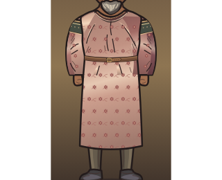
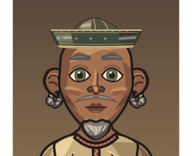
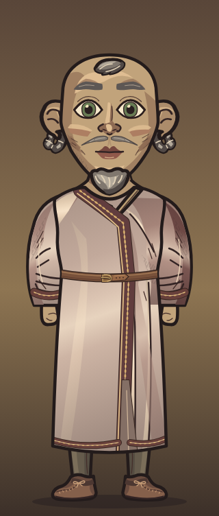
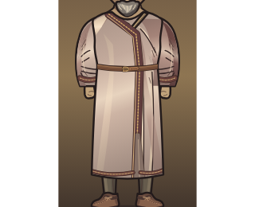
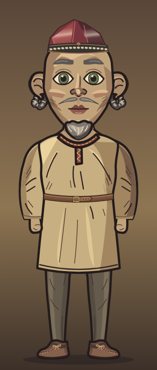
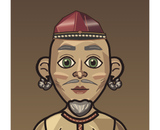
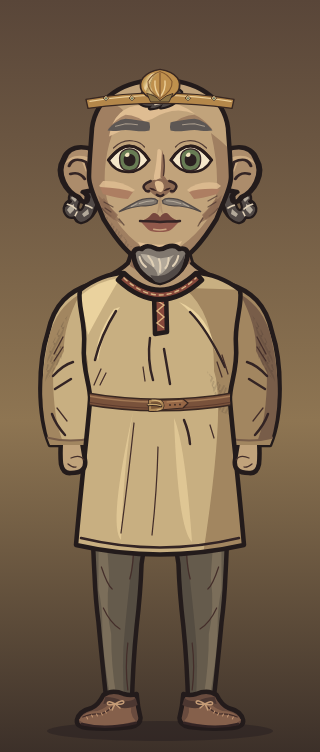
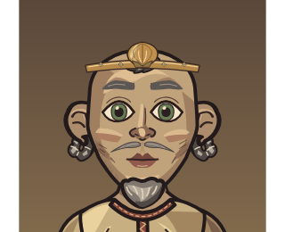
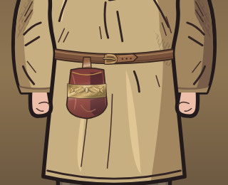
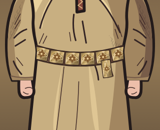

Царское одеяние хиляти-падшахи
new_delhi_khilat_padshahi 32 × 32

До и после
Поздний аналог: индийская миниатюра XV века с Ала ад-Дином Халджи; название хиляти-падшахи изображением не удостоверено.
Делийский четырёхугольный драгоценный убор для официальных случаев
new_delhi_official_jewel_headgear 32 × 32

Поздний аналог XV века: у сидящего султана виден угловатый тёмный убор. Точное четырёхугольное устройство и драгоценная отделка реконструированы.
Грузинское нарядное одеяние кабача
new_georgia_kabacha
32 × 32

Фреска Георгия IV Лаши в Бертубани, первая половина XIII века; утраченные части борта и подола дополнены условно.
Грузинское одеяние знати с вышитыми рукавами хуфи
new_georgia_khufu_sleeves 32 × 32
До и после
Фреска Шергила Дадиани и реконструкция фрески Рати Сурамили; даты выходят за 1200–1250 годы. Геометрия вышивки передана условно.
Грузинский княжеский убор с жемчужным рядом
new_georgia_pearl_rank_hat
32 × 32

Реконструкция портрета Шергила Дадиани по фреске Хоби: высокий красный убор и один жемчужный ряд.
Персидская придворная диадема с лотосовидным навершием
new_iran_court_diadem_lotus
32 × 32

Условная реконструкция по описанию Iranica. На приложенной миниатюре Китаб ад-Дирьяк 1198–1199 годов бутон лотоса неразличим.
Сунский рыбовидный служебный подвес с футляром
song_fish_pendant 32 × 32
32 × 32

До и после
Золотая накладка рыбьего мешка из погребения Южной Сун, XII–XIII века, музей Ланьси; тканевый футляр и крепление реконструированы.
Золотая накладка на пояс чиновника
song_gold_belt_plaque 32 × 32

До и после
Аналог: 13 рельефных позолоченных серебряных пластин Северной Сун XI–XII веков. Золотой материал и число видимых пластин условны.